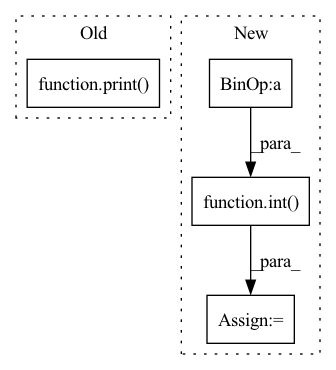

Pattern ID :615
Before Change
[negative_sample_indices] * 2, dim=-1
)
print(negative_sample_indices.shape)
print( dynamic_num_negatives)
return (
self.model(
wav,After Change
device=wav.device,
dtype=torch.long,
)
factor = int( self.config.num_negatives % dynamic_num_negatives[0])
negative_sample_indices = torch.cat(
[negative_sample_indices] * factor, dim=-1
)
print(negative_sample_indices.shape)In pattern: SUPERPATTERN
Frequency: 3
Non-data size: 4
Instances Fragment ID: 2288242
Project Name: speechbrain/speechbrain
Commit Name: 92148e8bc6bff627dc246c7413a7a69cfae2689a
Time: 2021-12-10
Author: parcollet.titouan@gmail.com
File Name: speechbrain/lobes/models/huggingface_wav2vec.py
M Class Name: HuggingFaceWav2Vec2Pretrain
N Class Name: HuggingFaceWav2Vec2Pretrain
M Method Name: forward(2)
N Method Name: forward(2)
M Parent Class: nn.Module
N Parent Class: nn.Module
M File Name: speechbrain/lobes/models/huggingface_wav2vec.py
N File Name: speechbrain/lobes/models/huggingface_wav2vec.py
M Start Line: 393
M End Line: 396
N Start Line: 391
N End Line: 396
Before Change
)
print(negative_sample_indices.shape)
print(dynamic_num_negatives)
print( dynamic_num_negatives.items())
return (
self.model(
wav,After Change
device=wav.device,
dtype=torch.long,
)
factor = int( self.config.num_negatives % dynamic_num_negatives.item())
negative_sample_indices = torch.cat(
[negative_sample_indices] * 2, dim=-1
)
print(negative_sample_indices.shape) Fragment ID: 2288259
Project Name: speechbrain/speechbrain
Commit Name: d284b2d04f662478a4c0f93442a8c5bd52b7659f
Time: 2021-12-10
Author: parcollet.titouan@gmail.com
File Name: speechbrain/lobes/models/huggingface_wav2vec.py
M Class Name: HuggingFaceWav2Vec2Pretrain
N Class Name: HuggingFaceWav2Vec2Pretrain
M Method Name: forward(2)
N Method Name: forward(2)
M Parent Class: nn.Module
N Parent Class: nn.Module
M File Name: speechbrain/lobes/models/huggingface_wav2vec.py
N File Name: speechbrain/lobes/models/huggingface_wav2vec.py
M Start Line: 397
M End Line: 397
N Start Line: 391
N End Line: 397
Before Change
// compute by the spherical harmonics
// -> (Nbatch,Nelec,Nrbf)
Y = SphericalHarmonics(xyz,self.bas_l,self.bas_m)
print( Y.shape)
return X * Y
if __name__ == "__main__":After Change
// add the components if DZ basis set
if self.basis == "dz":
nrbf = XY.shape[-1]
norb = int( nrbf/ 2)
XY = XY.view(-1,self.nelec,2,norb).sum(2)
return XY
Fragment ID: 2288243
Project Name: nlesc-jcer/qmctorch
Commit Name: ce1377a8a2603d0b0eb0889b5a292d77d0ea8bdc
Time: 2019-07-11
Author: nicolas.gm.renaud@gmail.com
File Name: pyCHAMP/wavefunction/slater_orbitals.py
M Class Name: STO_SZ
N Class Name: STO
M Method Name: forward(2)
N Method Name: forward(2)
M Parent Class: nn.Module
N Parent Class: nn.Module
M File Name: pyCHAMP/wavefunction/slater_orbitals.py
N File Name: pyCHAMP/wavefunction/slater_orbitals.py
M Start Line: 55
M End Line: 78
N Start Line: 78
N End Line: 93